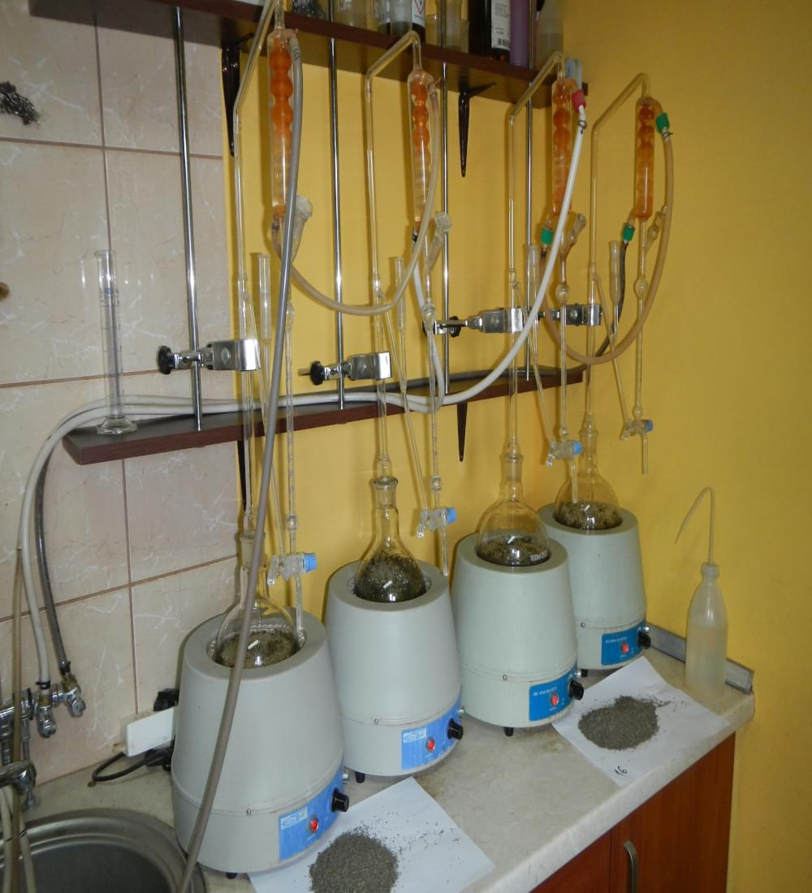
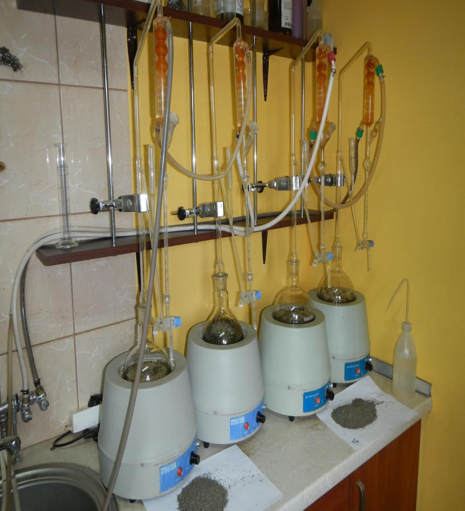

Innowacyjno w produkcji:
Nasz unikalny proces produkcyjny
W celu zapewnienia najwyższej jakoci produkt贸w, wprowadzilimy wewntrzny system monitorowania jakoci od wide do widelca. Dbamy o nasz produkt od skupu surowca zielarskiego, przez przer贸b, magazynowanie, aż po wyr贸b kocowy.

 

Firma Herbimar przygotowuje produkty zgodnie z wymaganiami i specyfikacj jakociow klient贸w.
Jako naszych produkt贸w jest monitorowana poprzez nasz dzia jakoci i wewntrzne laboratorium. W ramach zarzdzania systemami jakoci monitorujemy:

Kontrolujemy nasz produkcje
Posiadamy rozbudowany park maszynowy takich producent贸w jak Winicker & Lieber, Allgaier, Scorpion, jak r贸wnież pracujemy na naszych autorskich rozwizaniach produkcyjnych. Posiadamy 3 komory z wymiennym wymiennikiem ciepa. Nasze zaplecze produkcyjne pozwala nam zaoferowa nastpujce usugi:
- Oczyszczanie
- Frakcjonowanie
- Mieszanie
- Pakowanie
- Fumigacja z użyciem PH3 i CO2
Jako produkt贸w jako przewaga konkurencyjna: Nasze kluczowe czynniki sukcesu
Aby sprosta wszelakim oczekiwaniom wdrożylimy w naszej organizacji kilka system贸w zarzdzania jakoci takich jak: GMP+, ISO 9001:2015, HACCP. Dbamy o to, aby weryfikacja surowc贸w zielarskich odbya sie juz na przyjeciu surowca, kontrolujemy etapy produkcji i wyr贸b gotowy. Jestemy w stanie przeprowadzi idetyfikowalno każdego produktu gotowego. Dżymy do spenienia oczekiwa klient贸w i ich penej satysfakcji ze wsp贸pracy.
Oczyszczanie surowc贸w zielarskich: Minimalizacja zanieczyszcze i utrzymanie naturalnych waciwoci
Dziki kilku liniom czyszczcym, skadajcych si z odsiewaczy, sto贸w grawitacyjnych, tuneli pneumatycznych, instalacji do redukcji zanieczyszcze lekkich i detektor贸w metali, znaczco redukujemy zanieczyszczenia mineralne (piasek, kamyki, grudki ziemi, zanieczyszczenia metalowe) i niepożdane w kocowym produkcie zanieczyszczenia organiczne (na przykad odygi, czci korzeni, nasiona)
Firma Herbimar oferuje swoim Klientom bogat ofert surowc贸w zielarskich. W zależnoci od frakcji ostatecznego produktu jestemy w stanie przygotowa od 4 do 10 ton krojonego produktu dziennie, kt贸re dostpne s we frakcjach takich jak:
nierozdrobnione
frakcja ekstrakcyjna
fix (TBC)
puder